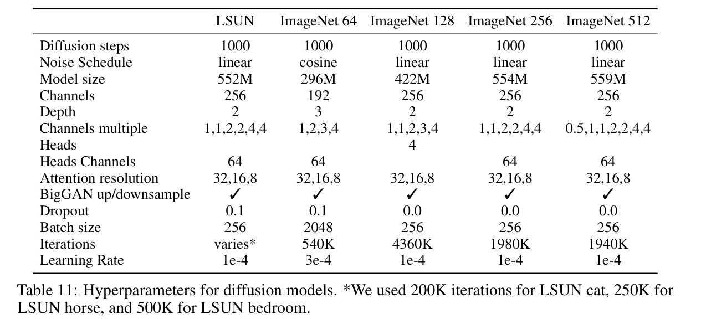

全文翻译
摘要
我们表明，扩散模型可以实现优于当前最先进的生成模型的图像样本质量。我们通过一系列消融找到更好的架构，在无条件图像合成中实现这一点。对于条件图像合成，我们通过分类器指导进一步提高样本质量：一种简单、计算高效的方法，使用分类器的梯度来权衡多样性以获得保真度。我们在 ImageNet 128×128 上实现了 2.97 的 FID，在 ImageNet 256×256 上实现了 4.59，在 ImageNet 512×512 上实现了 7.72，即使每个样本只有 25 次前向传递，我们也可以匹配 BigGAN-deep，同时保持更好的分布覆盖率。最后，我们发现分类器指导与上采样扩散模型很好地结合，进一步将 ImageNet 256×256 的 FID 提高到 3.94，在 ImageNet 512×512 上提高到 3.85。我们在 https://github.com/openai/guided-diffusion 发布我们的代码。
1 引言
| 图1：我们最佳的ImageNet 512×512模型（FID为3.85）生成的部分样本 |
在过去几年中，生成模型已经具备生成类似人类自然语言[9]、高质量合成图像[8, 34, 57]以及高度多样化的人类语音和音乐[70, 17]的能力。这些模型有多种应用方式，例如根据文本提示生成图像[78, 56]或学习有用的特征表示[18, 10]。尽管这些模型已经能够生成逼真的图像和声音，但在当前最先进水平的基础上仍有很大的改进空间，更好的生成模型可能会对图形设计、游戏、音乐制作以及无数其他领域产生广泛影响。
生成对抗网络（GANs）[25]目前在大多数图像生成任务中保持着最先进的地位[8, 74, 34]，这是通过FID[29]、Inception Score[61]和Precision[38]等样本质量指标来衡量的。然而，其中一些指标并不能完全捕捉多样性，并且已有研究表明，GANs在多样性方面不如基于似然的最先进模型[57, 49, 48]。此外，GANs通常难以训练，若没有精心选择的超参数和正则化项，很容易出现崩溃的情况[8, 47, 7]。
虽然 GAN 拥有最先进的技术，但它们的缺点使其难以扩展和应用于新域。因此，已经做了大量工作来使用基于似然的模型来实现类似GAN的样本质量[51,25,42,9]。虽然这些模型捕获了更多的多样性，并且通常比 GAN 更容易扩展和训练，但它们在视觉样本质量方面仍然不足。此外，除 VAE 外，这些模型的采样在挂钟时间方面比 GAN 慢。扩散模型是一类基于似然的模型，最近被证明可以产生高质量的图像[56,59,25]，同时提供理想的特性，如分布覆盖率、平稳的训练目标和易于扩展。这些模型通过逐渐从信号中去除噪声来生成样本，它们的训练目标可以表示为重新加权的变分下限[25]。这类模型在 CIFAR-10 [31] 上已经拥有最先进的 [60]，但在 LSUN 和 ImageNet 等困难生成数据集上仍然落后于 GAN。Nichol 和 Dhariwal [43] 发现，这些模型随着计算量的增加而可靠地改进，并且即使在使用上采样堆栈的困难 ImageNet 256×256 数据集上也能产生高质量的样本。然而，该模型的 FID 仍然无法与 BigGAN-deep [5] 竞争，后者是该数据集上目前最先进的模型。
我们假设扩散模型和 GAN 之间的差距至少源于两个因素：首先，最近的 GAN 文献使用的模型架构已经被大量探索和完善;其次，GAN 能够在多样性和保真度之间进行权衡，产生高质量的样本，但不能覆盖整个分布。我们的目标是将这些好处引入扩散模型，首先通过改进模型架构，然后设计一种方案来权衡多样性以获得保真度。通过这些改进，我们实现了新的最先进的技术，在几个不同的指标和数据集上超越了 GAN。
本文的其余部分组织如下。在第2节中，我们简要介绍了基于Ho等[25]的扩散模型的背景，以及Nichol和Dhariwal [43]以及Song等[57]的改进，并描述了我们的评估设置。在第 3 节中，我们介绍了一些简单的架构改进，这些改进极大地推动了 FID。在第 4 节中，我们描述了一种在采样过程中使用分类器中的梯度来指导扩散模型的方法。我们发现，可以调整单个超参数，即分类器梯度的尺度，以权衡多样性以获得保真度，并且我们可以将这个梯度比例因子增加一个数量级，而无需获得对抗性样本 [61]。最后，在第 5 节中，我们展示了具有改进架构的模型在无条件图像合成任务上实现了最先进的技术，并且在分类器指导下实现了最先进的条件图像合成。当使用分类器指导时，我们发现我们可以用低至 25 次前向传递进行采样，同时保持与 BigGAN 相当的 FID。我们还将改进的模型与上采样堆栈进行了比较，发现这两种方法提供了互补的改进，并且将它们结合起来在 ImageNet 256×256 和 512×512 上提供了最佳结果。
2 背景
在本节中，我们简要概述扩散模型。如需更详细的数学描述，请读者参考附录B。
从高层次来看，扩散模型通过逆转一个逐渐添加噪声的过程，从某个分布中进行采样。具体而言，采样从噪声$x_T$开始，逐步生成噪声较少的样本$x_{T - 1}$、$x_{T - 2}$，$\cdots$，直至得到最终样本$x_0$。每个时间步$t$都对应着特定的噪声水平，$x_t$可被视为信号$x_0$与一些噪声$\epsilon$的混合，其中信噪比由时间步$t$决定。在本文的其余部分，我们假设噪声$\epsilon$服从对角高斯分布，这对于自然图像效果良好，并且简化了各种推导过程。
扩散模型旨在学习从$x_t$生成一个稍微更“去噪”的$x_{t - 1}$。Ho等人将这个模型参数化为函数$\epsilon_{\theta}(x_t, t)$，用于预测带噪样本$x_t$的噪声分量。为了训练这些模型，在一个小批量中，每个样本都是通过随机抽取一个数据样本$x_0$、一个时间步$t$和噪声$\epsilon$生成的，它们共同产生一个带噪样本$x_t$（公式17）。然后，训练目标是$|\epsilon_{\theta}(x_t, t) - \epsilon|^2$，即在真实噪声和预测噪声之间的简单均方误差损失（公式26）。
从噪声预测器$\epsilon_{\theta}(x_t, t)$进行采样的方法并非显而易见。回想一下，扩散采样是从$x_T$开始，反复从$x_t$预测$x_{t - 1}$。Ho等人表明，在合理的假设下，我们可以将给定$x_t$时$x_{t - 1}$的分布$p_{\theta}(x_{t - 1}|x_t)$建模为对角高斯分布$N(x_{t - 1}; \mu_{\theta}(x_t, t), \sum_{\theta}(x_t, t))$，其中均值$\mu_{\theta}(x_t, t)$可以计算为$\epsilon_{\theta}(x_t, t)$的函数（公式27）。这个高斯分布的方差$\sum_{\theta}(x_t, t)$可以固定为一个已知常数，或者用一个单独的神经网络头进行学习。当扩散步骤总数$T$足够大时，这两种方法都能产生高质量的样本。
Ho等人观察到，在实践中，简单的均方误差目标$L_{simple}$比从将去噪扩散模型解释为变分自编码器（VAE）推导出来的实际变分下界$L_{vlb}$效果更好。他们还指出，使用这个目标进行训练，并采用相应的采样过程，等同于Song和Ermon的去噪分数匹配模型，后者使用朗之万动力学从用多个噪声水平训练的去噪模型中采样，以生成高质量的图像样本。我们通常将这两类模型都简称为“扩散模型”。
2.1改进
在Song和Ermon以及Ho等人的突破性工作之后，最近有几篇论文提出了对扩散模型的改进方法。这里我们介绍其中一些改进，这些改进被应用于我们的模型中。
Nichol和Dhariwal发现，像Ho等人那样将方差$\sum_{\theta}(x_t, t)$固定为常数，对于较少扩散步骤的采样来说并非最优选择。他们提出将$\sum_{\theta}(x_t, t)$参数化为一个神经网络，其输出$v$通过以下方式进行插值：
这里，$\beta_t$和$\bar{\beta}_t$（公式19）是Ho等人论文中对应于反向过程方差上下限的方差。此外，Nichol和Dhariwal提出了一种混合目标，用于使用加权和$L_{simple} + \lambda L_{vib}$同时训练$\epsilon_{\theta}(x_t, t)$和$\sum_{\theta}(x_t, t)$。通过他们的混合目标学习反向过程方差，使得在采样步骤较少的情况下，样本质量也不会有太大下降。我们采用了这个目标和参数化方法，并在所有实验中使用。
Song等人提出了DDIM（去噪扩散隐式模型），它构建了一个替代的非马尔可夫噪声过程，该过程与DDPM（去噪扩散概率模型）具有相同的正向边缘分布，但通过改变反向噪声的方差，可以产生不同的反向采样器。通过将这个噪声设置为0，他们提供了一种将任何模型$\epsilon_{\theta}(x_t, t)$转换为从潜在向量到图像的确定性映射的方法，并发现这为减少采样步骤提供了另一种途径。当采样步骤少于50步时，我们采用这种采样方法，因为Nichol和Dhariwal发现，在这种情况下该方法是有益的。
2.2样本质量指标
为比较不同模型的样本质量，我们使用以下指标进行定量评估。虽然这些指标在实际中应用广泛，且与人类的评判结果有较好的相关性，但它们并非完美的衡量标准，寻找更优的样本质量评估指标仍是一个有待解决的问题。
Inception Score（IS， inception得分）由Salimans等人提出，用于衡量模型在生成单个类别中具有说服力的样本的同时，对整个ImageNet类别分布的捕捉能力。该指标的一个缺点是，它不会对覆盖整个分布或捕捉类别内的多样性给予奖励，那些记忆了完整数据集一小部分的模型仍可能获得较高的IS。为了比IS更好地捕捉多样性，Heusel等人提出了Fréchet Inception Distance（FID，弗雷歇Inception距离），他们认为FID比Inception Score更符合人类的判断。FID在Inception - V3的潜在空间中，对称地度量了两个图像分布之间的距离。最近，Nash等人提出了sFID，它是FID的一种变体，使用空间特征而非标准的池化特征。他们发现这个指标能更好地捕捉空间关系，对具有连贯高级结构的图像分布给予奖励。最后，Kynkäänniemi等人提出了改进的Precision（精度）和Recall（召回率）指标，分别将样本保真度衡量为落入数据流形的模型样本比例（精度），以及落入样本流形的数据样本比例（召回率），以此来分别衡量样本的保真度和多样性或分布覆盖范围。
| 表1：各种架构变化的消融实验，在700K和1200K次迭代时评估 |
我们将FID作为整体样本质量比较的默认指标，因为它既可以衡量多样性，也可以衡量保真度，并且在最先进的生成建模工作中已成为事实上的标准指标。我们使用Precision或IS来衡量保真度，使用Recall来衡量多样性或分布覆盖范围。在与其他方法进行比较时，只要有可能，我们就会使用公开样本或模型重新计算这些指标。这有两个原因：第一，一些论文在与训练集的任意子集进行比较，而这些子集并不容易获取；第二，细微的实现差异会影响最终的FID值。为确保比较的一致性，我们将整个训练集作为参考批次，并使用相同的代码库评估所有模型的指标。
3 架构改进
在本节中，我们进行了多项架构消融实验，以找出能为扩散模型提供最佳样本质量的模型架构。
Ho等人将UNet架构引入扩散模型，Jolicoeur-Martineau等人发现，与之前用于去噪分数匹配的架构相比，UNet架构显著提高了样本质量。UNet模型使用了一堆残差层和下采样卷积，随后是一堆带有上采样卷积的残差层，通过跳跃连接将具有相同空间大小的层连接起来。此外，他们在16×16分辨率处使用了单头全局注意力层，并将时间步嵌入投影到每个残差块中。Song等人发现，对UNet架构的进一步修改提高了在CIFAR-10和CelebA-64数据集上的性能。我们在ImageNet 128×128数据集上也得到了相同的结果，发现在更高分辨率、更大且更多样化的数据集上，架构确实可以大幅提升样本质量。
我们探索了以下架构变化：
- 在保持模型大小相对恒定的情况下，增加深度与增加宽度的效果对比。
- 增加注意力头的数量。
- 在32×32、16×16和8×8分辨率下使用注意力机制，而不仅仅是在16×16分辨率下使用。
- 遵循[60]，使用BigGAN的残差块对激活值进行上采样和下采样。
- 遵循[60, 27, 28]，用$\frac{1}{\sqrt{2}}$对残差连接进行缩放。
在本节的所有比较中，我们在ImageNet 128×128数据集上训练模型，批量大小为256，并使用250个采样步骤进行采样。我们训练了具有上述架构变化的模型，并在表1中比较了它们在训练两个不同阶段的FID。除了对残差连接进行缩放之外，所有其他修改都提高了性能，并且具有正向的复合效应。在图2中我们观察到，虽然增加深度有助于提升性能，但它也会增加训练时间，并且达到与更宽模型相同的性能需要更长时间，因此在进一步的实验中我们不采用这一变化。
| 表 2：注意力头的消融实验。更多的头或更少的每个头通道数都能提高 FID。基础模型是表 1 中最佳模型的较小版本 |
| 图2：各种架构变化的消融实验，展示了FID随实际训练时间的变化情况。为提高效率，FID是基于1万个样本进行评估的，而非5万个样本。 |
| 表3：对将时间步和类别嵌入投影到每个残差块时使用的逐元素操作进行消融实验。用Ho等人[25]提出的Addition + GroupNorm层替代AdaGN会使FID变差。 |
我们还研究了其他与Transformer架构更匹配的注意力配置。为此，我们尝试将注意力头的数量固定为常数，或者固定每个注意力头的通道数。对于架构的其余部分，我们使用128个基础通道、每个分辨率2个残差块、多分辨率注意力机制和BigGAN上采样/下采样，并将模型训练700K次迭代。表2展示了我们的结果，表明更多的注意力头或更少的每个头通道数可以改善FID。在图2中，我们看到每个头64个通道在训练时间方面表现最佳，因此我们选择每个头64个通道作为默认设置。我们注意到，这一选择也与现代Transformer架构更匹配，并且在最终的FID方面与我们的其他配置相当。
3.1自适应组归一化
我们还对一个称为自适应组归一化（AdaGN）的层进行了实验，该层在组归一化操作之后，将时间步和类别嵌入合并到每个残差块中，类似于自适应实例归一化和FiLM。我们将该层定义为AdaGN$(h, y) = y$ GroupNorm$(h) + y_b$，其中$h$是残差块中第一个卷积之后的中间激活值，$y = [y_s, y_b]$是通过对时间步和类别嵌入进行线性投影得到的。
我们已经看到AdaGN改进了我们早期的扩散模型，因此在所有实验中默认都包含了该层。在表3中，我们明确对这一选择进行了消融实验，发现自适应组归一化层确实降低了FID。两个模型都使用128个基础通道、每个分辨率2个残差块、每个头64个通道的多分辨率注意力机制和BigGAN上采样/下采样，并训练了700K次迭代。
在本文的其余部分，我们将这个最终改进的模型架构作为默认架构：每个分辨率有2个残差块的可变宽度架构、每个头64个通道的多头注意力机制、在32、16和8分辨率下的注意力机制、用于上采样和下采样的BigGAN残差块，以及用于将时间步和类别嵌入注入残差块的自适应组归一化。
4. 分类器引导
除了采用精心设计的架构外，用于条件图像合成的生成对抗网络（GANs）还大量利用类别标签。这通常表现为类别条件归一化统计信息（如[16, 11]），以及具有明确设计为类似分类器$p(y|x)$功能的判别器（如[40]）。Lucic等人[36]发现，在标签有限的情况下，生成合成标签是有帮助的，这进一步证明了类别信息对这些模型成功的关键作用。
鉴于对GANs的这一观察，探索在扩散模型中以不同方式利用类别标签作为条件是有意义的。我们已经将类别信息整合到归一化层中（第3.1节）。在这里，我们探索一种不同的方法：利用分类器$p(y|x)$来改进扩散生成器。Sohl-Dickstein等人[56]和Song等人[60]展示了一种实现方式，即可以使用分类器的梯度对预训练的扩散模型进行条件设定。具体来说，我们可以在带噪图像$x_t$上训练一个分类器$p_{\phi}(y|x_t, t)$，然后使用梯度$\nabla_{x_t} \log p_{\phi}(y|x_t, t)$将扩散采样过程导向任意类别标签$y$ 。
在本节中，我们首先回顾两种使用分类器推导条件采样过程的方法。然后描述在实践中如何使用这些分类器来提高样本质量。为简洁起见，我们将符号$p_{\phi}(y|x_t, t)$记为$p_{\phi}(y|x_t)$，将$\epsilon_{\theta}(x_t, t)$记为$\epsilon_{\theta}(x_t)$，并注意对于每个时间步$t$，它们都代表不同的函数，并且在训练时模型必须以输入$t$为条件。
4.1条件反向加噪过程
我们从一个具有无条件反向加噪过程$p_{\theta}(x_t|x_{t + 1})$的扩散模型开始。为了以标签$y$为条件，只需按照下式对每次转换进行采样：
其中$Z$是一个归一化常数（证明见附录H）。通常，从这个分布中精确采样是难以处理的，但Sohl-Dickstein等人[56]表明，可以将其近似为一个扰动的高斯分布。在这里，我们回顾一下这个推导过程。
回想一下，我们的扩散模型使用高斯分布从时间步$x_{t + 1}$预测前一个时间步$x_t$：
我们还必须以$y$为条件对$x_T$进行采样，但足够嘈杂的扩散过程会使$x_T$即使在条件情况下也近似为高斯分布。
我们可以假设$\log_{\phi} p(y|x_t)$相对于$\sum^{-1}$具有较低的曲率。在无限扩散步骤的极限情况下，这个假设是合理的，此时$|\sum| \to 0$。在这种情况下，我们可以在$x_t = \mu$附近使用泰勒展开来近似$\log p_{\phi}(y|x_t)$：
这里，$g = \left.\nabla_{x_t} \log p_{\phi}(y|x_t)\right|_{x_t = \mu}$，$C_1$是一个常数。这就得到：
我们可以安全地忽略常数项$C_4$，因为它对应于公式(2)中的归一化系数$Z$。因此，我们发现条件转换算子可以近似为一个与无条件转换算子类似的高斯分布，但均值偏移了$\sum g$。算法1总结了相应的采样算法。我们在梯度中包含了一个可选的缩放因子$s$，将在4.3节中详细介绍。
4.2 DDIM的条件采样
上述条件采样的推导仅对随机扩散采样过程有效，不能应用于像DDIM这样的确定性采样方法。为此，我们使用了一种基于分数的条件技巧，该技巧改编自Song等人[60]的工作，利用了扩散模型和分数匹配[59]之间的联系。具体来说，如果我们有一个模型$\epsilon_{\theta}(x_t)$可以预测添加到样本中的噪声，那么可以用它来推导一个分数函数：
| 图3：来自具有分类器引导的无条件扩散模型的样本，以 “彭布罗克威尔士柯基犬” 类别为条件。使用分类器缩放因子1.0（左图；FID：33.0）生成的样本在该类别中缺乏说服力，而使用分类器缩放因子10.0（右图；FID：12.0）生成的图像与该类别更加一致。 |
我们现在可以将其代入$p(x_t)p(y|x_t)$的分数函数中：
最后，我们可以定义一个新的$\epsilon$预测$\hat{\epsilon}(x_t)$，它对应于联合分布的分数：
然后，我们可以使用与常规DDIM完全相同的采样过程，但使用修改后的噪声预测$\hat{\epsilon}_{\theta}(x_t)$代替$\epsilon_{\theta}(x_t)$。算法2总结了相应的采样算法。
4.3 缩放分类器梯度
为了将分类器引导应用于大规模生成任务，我们在ImageNet上训练分类模型。我们的分类器架构只是UNet模型的下采样主干，在8×8层使用注意力池化来生成最终输出。我们在与相应扩散模型相同的加噪分布上训练这些分类器，并添加随机裁剪以减少过拟合。训练完成后，我们按照算法1的概述，使用公式(10)将分类器整合到扩散模型的采样过程中。
在对无条件ImageNet模型的初始实验中，我们发现有必要将分类器梯度乘以一个大于1的常数因子。当使用缩放因子1时，我们观察到分类器为最终样本分配给所需类别的概率合理（约50%），但在视觉检查时，这些样本与预期类别不匹配。增大分类器梯度解决了这个问题，分类器给出的类别概率增加到接近100%。图3展示了这种效果的一个示例。
为了理解缩放分类器梯度的效果，注意到$s \cdot \nabla_{x} \log p(y|x) = \nabla_{x} \log \frac{1}{Z}p(y|x)^s$，其中$Z$是一个任意常数。因此，条件设定过程在理论上仍然基于与$p(y|x)^s$成比例的重新归一化分类器分布。当$s > 1$时，这个分布比$p(y|x)$更尖锐，因为较大的值会被指数放大。换句话说，使用更大的梯度缩放因子会更关注分类器的模态，这对于生成更高保真度（但多样性较低）的样本可能是理想的。
在上述推导中，我们假设基础扩散模型是无条件的，对$p(x)$进行建模。也可以训练条件扩散模型$p(x|y)$，并以完全相同的方式使用分类器引导。表4显示，分类器引导可以显著提高无条件和条件模型的样本质量。我们看到，在足够大的缩放因子下，引导的无条件模型的FID可以非常接近未引导的条件模型，尽管直接使用类别标签进行训练仍然有帮助。对条件模型进行引导进一步降低了FID。表4还显示，分类器引导以召回率为代价提高了精度，从而在样本保真度和多样性之间引入了权衡。我们在图4中明确评估了这种权衡如何随梯度缩放因子变化。我们看到，将梯度缩放因子增大到1.0以上会平稳地以召回率（一种多样性度量）为代价，换取更高的精度和IS（保真度度量）。由于FID和sFID同时依赖于多样性和保真度，它们的最佳值在中间点获得。我们还在图5中将我们的引导方法与BigGAN的截断技巧进行了比较。我们发现，在以FID换取Inception Score时，分类器引导明显优于BigGAN-deep。在精度/召回率的权衡方面，情况不太明确，这表明分类器引导仅在达到一定精度阈值之前是更好的选择，超过该阈值后，它无法实现更高的精度。
| 表4：分类器引导对样本质量的影响。条件模型和无条件模型均在ImageNet 256×256数据集上进行了200万次迭代训练，批量大小为256。 |
| 图4：对于一个基于ImageNet 128×128的类条件模型，随着分类器梯度缩放因子变化，样本质量的变化情况。 |
| 图5：BigGAN-deep改变截断值和分类器引导改变梯度缩放时的权衡。模型在ImageNet 128×128上进行评估。BigGAN-deep的结果是使用TFHub模型[12]在截断水平为[0.1, 0.2, 0.3, …, 1.0]的情况下产生的。 |
5. 结果
为了评估改进后的模型架构在无条件图像生成任务上的表现，我们在 LSUN 数据集的三个类别（卧室、马和猫）上分别训练了扩散模型。为了评估分类器引导的效果，我们在 128×128、256×256 和 512×512 分辨率的 ImageNet 数据集上训练了条件扩散模型。
| 表5：各任务中与最先进生成模型的样本质量比较。ADM指我们经过改进的扩散模型，ADM-G则额外使用了分类器引导。LSUN扩散模型采用1000步采样（见附录J）。ImageNet扩散模型除使用DDIM采样器时采用25步采样外，其他情况采用250步采样。在此分辨率下没有可用的BigGAN-deep模型，所以我们自行训练了模型。†由于缺乏公开的模型或样本，这些值取自之前的论文。‡结果使用了双分辨率堆栈。* |
5.1 最先进的图像合成
表5总结了我们的实验结果。我们的扩散模型在每个任务上都能获得最佳的FID，并且在除一项任务外的所有任务中都能获得最佳的sFID。凭借改进后的架构，我们在LSUN数据集和ImageNet 64×64任务上已经实现了最先进的图像生成效果。对于更高分辨率的ImageNet任务，我们发现分类器引导使我们的模型显著优于最好的GANs。这些模型在保持较高分布覆盖率（以召回率衡量）的同时，获得了与GANs相似的感知质量，甚至仅使用25个扩散步骤就能做到这一点。
图6将最好的BigGAN-deep模型的随机样本与我们最好的扩散模型的样本进行了比较。虽然样本在感知质量上相似，但扩散模型比GAN包含更多的模式，例如放大的鸵鸟头部、单只火烈鸟、不同方向的芝士汉堡，以及一条没有被人拿着的丁鱥鱼。我们还在附录C中检查了生成样本在Inception-V3特征空间中的最近邻，并在附录K - M中展示了更多样本。
5.2 与上采样的比较
我们还将分类器引导与使用两阶段上采样堆栈的方法进行了比较。Nichol和Dhariwal 以及Saharia等人通过将低分辨率扩散模型与相应的上采样扩散模型相结合，训练了两阶段扩散模型。在这种方法中，上采样模型被训练用于对训练集中的图像进行上采样，并以通过简单插值（例如双线性插值）在通道维度上连接到模型输入的低分辨率图像为条件。在采样过程中，低分辨率模型生成一个样本，然后上采样模型以该样本为条件进行生成。这在ImageNet 256×256任务上显著提高了FID，但仍未达到像BigGAN-deep这样的最先进模型的性能，如表5所示。
| 图6：截断值为1.0的BigGAN-deep生成的样本（FID为6.95，左图）、我们带引导的扩散模型生成的样本（FID为4.59，中图）以及训练集样本（右图）的对比。 |
| 表6：对我们的单一模型、上采样模型和分类器引导模型进行比较。对于上采样，我们采用Nichol和Dhariwal [43] 的上采样堆栈，并结合我们的架构改进，将其称为ADM-U。两阶段上采样模型的基础分辨率，对于256分辨率的模型是64，对于512分辨率的模型是128。在将分类器引导与上采样相结合时，我们仅对低分辨率模型进行引导。 |
表6表明，分类器引导和上采样在不同方面提高了样本质量。上采样在保持高召回率的同时提高了精度，而分类器引导则提供了一个可调节的参数，用于在多样性和更高精度之间进行权衡。我们通过在低分辨率下使用分类器引导，然后再上采样到高分辨率，获得了最佳的FID，这表明这些方法是相辅相成的。
6. 相关工作
基于分数的生成模型由Song和Ermon提出，旨在通过数据分布的梯度对其进行建模，然后使用朗之万动力学进行采样。Ho等人发现了这种方法与扩散模型之间的联系，并利用这一联系获得了出色的样本质量。在这项突破性工作之后，许多后续研究取得了更有前景的成果：Kong等人和Chen等人证明了扩散模型在音频领域表现良好；Jolicoeur-Martineau等人发现类似GAN的设置可以改进这些模型生成的样本；Song等人探索了利用随机微分方程的技术来提高基于分数的模型的样本质量；Song等人和Nichol与Dhariwal提出了提高采样速度的方法；Nichol和Dhariwal以及Saharia等人使用上采样扩散模型在具有挑战性的ImageNet生成任务上展示了有前景的结果。与扩散模型相关的是，在Sohl-Dickstein等人的工作之后，Goyal等人描述了一种学习具有迭代生成步骤的模型的技术，并发现使用似然目标进行训练时，该模型可以生成高质量的图像样本。
以往关于扩散模型的研究中缺少一种在多样性和保真度之间进行权衡的方法。而其他生成技术为这种权衡提供了自然的调节手段。Brock等人提出了GANs的截断技巧，即从截断正态分布中采样潜在向量。他们发现增加截断值会自然地导致多样性降低，但保真度提高。最近，Razavi等人提出使用分类器拒绝采样从基于自回归似然的模型中过滤掉不良样本，并发现这种技术提高了FID。大多数基于似然的模型也允许进行低温采样，这为强调数据分布的模态提供了一种自然的方式（见附录G）。
其他基于似然的模型也能生成高保真度的图像样本。VQ-VAE和VQ-VAE-2是在量化潜在代码之上训练的自回归模型，大大减少了在大图像上训练这些模型所需的计算资源。这些模型生成的图像多样且质量高，但在没有昂贵的拒绝采样和特殊指标来弥补模糊问题的情况下，仍不及GANs。DCTransformer是一种相关方法，它依赖于更智能的压缩方案。变分自编码器（VAEs）是另一类有前景的基于似然的模型，最近的方法如NVAE和VDVAE已成功应用于具有挑战性的图像生成领域。基于能量的模型也是一类历史悠久的基于似然的模型。从EBM分布中采样具有挑战性，Xie等人证明了朗之万动力学可用于从这些模型中采样连贯的图像。Du和Mordatch进一步改进了这种方法，获得了高质量的图像。最近，Gao等人将扩散步骤融入基于能量的模型中，并发现这样做可以改进这些模型生成的图像样本。
其他研究使用预训练的分类器来控制生成模型。例如，一系列新兴研究旨在使用预训练的CLIP模型为文本提示优化GAN的潜在空间。与我们的工作更相似的是，Song等人使用分类器通过扩散模型生成CIFAR-10的类别条件图像。在某些情况下，分类器可以作为独立的生成模型。例如，Santurkar等人证明了一个鲁棒的图像分类器可以作为独立的生成模型，Grathwohl等人训练了一个既是分类器又是基于能量的模型。
7. 局限性与未来工作
虽然我们认为扩散模型在生成式建模领域极具潜力，但由于需要经过多个去噪步骤（也就意味着多次前向传播），其在采样时的速度仍慢于生成对抗网络（GANs）。Luhman和Luhman在此方向开展了一项很有前景的研究，他们尝试将DDIM采样过程提炼为单步模型。尽管该单步模型生成的样本目前还无法与GANs相媲美，但相较于之前的单步基于似然的模型已有显著提升。未来在这一方向的研究，或许能够在不牺牲图像质量的前提下，彻底消除扩散模型与GANs在采样速度上的差距。
目前，我们提出的分类器引导技术仅适用于有标签的数据集，并且对于无标签数据集，我们尚未提供在多样性和保真度之间进行权衡的有效策略。未来，可以通过对样本进行聚类以生成合成标签，或者训练判别模型来预测样本是来自真实数据分布还是采样分布，从而将我们的方法扩展到无标签数据领域。
分类器引导的有效性表明，我们可以利用分类函数的梯度获得强大的生成模型。这可以通过多种方式对预训练模型进行条件设定，例如，使用噪声版的CLIP，基于文本描述对图像生成器进行条件设定，这与近期利用文本提示引导GANs的方法类似。这也意味着未来可以利用大规模无标签数据集预训练强大的扩散模型，之后再借助具有特定属性的分类器对其进行优化。
8. 结论
我们已经证明，扩散模型作为一类具有稳定训练目标的基于似然的模型，能够获得比当前最先进的生成对抗网络（GANs）更好的样本质量。我们改进后的架构在无条件图像生成任务中足以实现这一目标，而分类器引导技术则使我们在条件图像生成任务中也能做到这一点。在条件图像生成的情况下，我们发现可以通过调整分类器梯度的大小，在多样性和保真度之间进行权衡。这些带有分类器引导的扩散模型虽然在采样时仍需进行多次前向传播，但它们缩小了GANs和扩散模型在采样时间上的差距。最后，通过将分类器引导与上采样相结合，我们可以进一步提高高分辨率条件图像合成的样本质量。
9. 致谢
我们要感谢Google Brain团队的成员，感谢他们进行了富有启发性的讨论并提供了宝贵的反馈意见。特别感谢Yaroslav Bulatov、Adrian Chan、David Ha、Chris Shallue、Haoqi Zhang、Yuanzhi Li和Eric Jang，感谢他们在代码、模型、计算资源方面的帮助，以及对本文的评论。我们也感谢Krunoslav Sladoje、Arash Vahdat、Eric Xie、Jonathan Ho、Aditya Ramesh和David Lindner进行的有益讨论。我们感谢Google AI对我们的支持，以及Google Cloud对我们计算需求的支持。
A计算需求
计算资源对于现代机器学习应用至关重要，通常情况下，更多的计算资源能带来更好的结果。因此，将我们方法的计算需求与其他竞争方法进行比较十分重要。在本节中，我们将展示在相同或更低的计算预算下，我们的方法能够取得比StyleGAN2和BigGAN-deep更好的结果。
A.1吞吐量
我们首先在表7中对模型的吞吐量进行基准测试。对于理论吞吐量，我们使用THOP工具来衡量模型的理论浮点运算次数（FLOPs），并假设NVIDIA Tesla V100（120 TFLOPs）的利用率为100%；而实际吞吐量则通过测量实际运行时间来确定。当训练批次大小无法在单个机器上容纳时，我们会纳入两台机器之间的通信时间，我们的每台机器均配备8个V100。
我们发现，在PyTorch 1.7中简单实现我们的模型效率非常低，硬件利用率仅为20 - 30%。我们还对优化版本进行了基准测试，该版本使用更大的每GPU批次大小、融合的GroupNorm-Swish操作和融合的Adam CUDA操作。特别是对于我们的ImageNet 128×128模型，我们发现可以将每GPU批次大小从4增加到32，且仍能适配GPU内存，这大大提高了利用率。不过，我们的实现仍远未达到最优，进一步的优化有望让我们实现更高的利用率。
| 表7：我们的ImageNet模型的吞吐量，以每V100秒处理的图像数量为衡量单位。 |
A.2提前停止训练
此外，我们可以在训练更少轮次的情况下，依然保持比BigGAN-deep更优的样本质量。表8和表9对我们的ImageNet 128×128和256×256模型在整个训练过程中的表现进行了评估。可以看到，ImageNet 128×128模型在训练50万次迭代后，FID值就超越了BigGAN-deep（6.02），此时训练进度仅完成了八分之一。同样，ImageNet 256×256模型在训练75万次迭代后超越了BigGAN-deep，大约是整个训练过程的三分之一。
 |
|---|
| 表8：在整个训练过程中评估一个ImageNet 128×128模型（分类器梯度缩放因子为1.0）。 |
| 表9：在整个训练过程中评估一个ImageNet 256×256模型（分类器梯度缩放因子为1.0）。 |
A.3计算资源比较
最后，在表10中，我们将模型的计算资源使用情况与StyleGAN2和BigGAN-deep进行了对比，结果表明在相似的计算预算下，我们的模型能够获得更优的FID值。对于BigGAN-deep，Brock等人没有明确描述训练模型所需的计算资源，而是以在Google TPUv3 pod上训练的天数给出大致估计。我们根据2个TPU-v3天等于1个V100天的换算关系，将其TPU-v3估计值转换为V100天数。对于StyleGAN2，我们采用其在配置f下，在1个V100上32天13小时处理2500万张图像的报告吞吐量。需要注意的是，与训练生成模型相比，我们的分类器训练所需的计算资源相对较少。
| 表10：我们的扩散模型与StyleGAN2和BigGAN-deep在训练计算需求方面的对比。每个扩散模型的训练迭代次数在括号中注明。计算量以V100天为单位进行衡量。†表示ImageNet 256×256分类器的迭代次数为15万次（而非50万次）。‡表示ImageNet 64×64分类器的批次大小为256（而非1024）。表示ImageNet 128×128分类器的批次大小为256（而非1024）。* |
B 去噪扩散概率模型（DDPM）的详细公式推导
在此，我们详细回顾Ho等人提出的高斯扩散模型的公式。首先定义数据分布$x_{0} \sim q(x_{0})$，以及一个马尔可夫噪声过程$q$，该过程逐渐给数据添加噪声，从而生成从$x_{1}$到$x_{T}$的含噪样本。具体而言，噪声过程的每一步都根据方差调度$\beta_{t}$添加高斯噪声：
Ho等人指出，我们无需通过反复应用$q$来从$x_{t} \sim q(x_{t}|x_{0})$中采样。相反，$q(x_{t}|x_{0})$可表示为一个高斯分布。令$\alpha_{t} := 1 - \beta_{t}$，$\bar{\alpha}_{t} := \prod_{s = 0}^{t}\alpha_{s}$，则有：
这里，$1 - \bar{\alpha}_{t}$表示任意时刻步的噪声方差，我们也可以用它来定义噪声调度，而非$\beta_{t}$。
利用贝叶斯定理，可以得出后验分布$q(x_{t - 1}|x_{t}, x_{0})$也是一个高斯分布，其均值$\tilde{\mu}_{t}(x_{t}, x_{0})$和方差$\bar{\beta}_{t}$定义如下：
如果我们希望从数据分布$q(x_{0})$中采样，可以先从$q(x_{T})$中采样，然后通过反向采样步骤$q(x_{t - 1}|x_{t})$直至得到$x_{0}$。在合理设置$\beta_{t}$和$T$的情况下，分布$q(x_{T})$近似为各向同性高斯分布，因此从$q(x_{T})$中采样很容易。剩下的就是用神经网络来近似$q(x_{t - 1}|x_{t})$，因为当数据分布未知时，$q(x_{t - 1}|x_{t})$无法精确计算。为此，Sohl - Dickstein等人指出，当$T \to \infty$且$\beta_{t} \to 0$时，$q(x_{t - 1}|x_{t})$趋近于对角高斯分布，所以训练一个神经网络来预测均值$\mu_{\theta}$和对角协方差矩阵$\sum_{\theta}$就足够了：
为了训练该模型，使$p(x_{0})$学习到真实的数据分布$q(x_{0})$，我们可以优化$p_{\theta}(x_{0})$的变分下界$L_{vlb}$：
虽然上述目标函数有充分的理论依据，但Ho等人发现，在实践中另一个目标函数能产生更好的样本。具体来说，他们不是直接用神经网络对$\mu_{\theta}(x_{t}, t)$进行参数化，而是训练一个模型$\epsilon_{\theta}(x_{t}, t)$来预测公式（17）中的$\epsilon$。这个简化后的目标函数定义如下：
在采样过程中，我们可以通过替换从$\epsilon_{\theta}(x_{t}, t)$推导出$\mu_{\theta}(x_{t}, t)$：
需要注意的是，$L_{simple}$并没有为$\sum_{\theta}(x_{t}, t)$提供任何学习信号。Ho等人发现，与其学习$\sum_{\theta}(x_{t}, t)$，不如将其固定为常数，可以选择$\beta_{t}I$或$\tilde{\beta}_{t}I$，这些值分别对应于真实反向步骤方差的上界和下界。
C 样本的最近邻分析
当使用分类器来降低生成样本的多样性时，我们的模型能达到最佳的FID值。有人可能会担心，这样的过程可能会导致模型从训练数据集中召回已有的图像，尤其是在增大分类器梯度缩放因子时。为了验证这一点，我们查看了少量样本在InceptionV3特征空间中的最近邻。图7展示了结果，表明生成的样本确实是独特的，并未存储在训练集中。
| 图7：ImageNet 256×256上分类器引导模型生成样本的最近邻。对于每一幅图像，顶行是一个生成样本，其余行是数据集中与之最相近的前3个邻居图像。顶部的样本是在分类器梯度缩放因子为1、采用250步扩散采样生成的（FID为4.59）。底部的样本是在分类器梯度缩放因子为2.5、采用25步DDIM采样生成的（FID为5.44）。 |
D Effect of Varying the Classifier Scale
| 图8：分类器梯度缩放因子从0.0（左）增加到5.5（右）时的样本。每行对应一个固定的噪声种子。我们观察到，分类器会显著改变一些图像，而对另一些图像的影响则相对较小。 |
E LSUNDiversity Comparison
| 图9：截断值为1.0的StyleGAN2（卧室样本使用StyleGAN）生成的样本（左）、我们的扩散模型生成的样本（中）以及训练集样本（右）对比。 |
F 使用DDIM在数据集图像间进行插值
给定初始噪声$x_T$，DDIM（去噪扩散隐式模型）的采样过程是确定性的，从而产生了一个隐式潜在空间。它对应于正向积分一个常微分方程（ODE），我们可以反向运行该过程，得到生成给定真实图像的潜在向量。在此，我们尝试将真实图像编码到这个潜在空间中，然后在它们之间进行插值。
DDIM生成过程的公式（13）为：
因此，在小步长的极限情况下，我们可以预期这个ODE正向过程的反向过程近似为：
我们发现，即使仅使用250步反向步骤，这个反向ODE近似也能得到具有合理重建效果的潜在向量。然而，我们注意到，如果反向所有250步，会出现一些噪声伪影，而反向前249步能得到更好的重建效果。为了对潜在向量、类别嵌入和分类器对数概率进行插值，我们使用(\cos(\theta)x_{0} + \sin(\theta)x_{1})，其中(\theta)从0到(\frac{\pi}{2})线性变化。
图10a至图10c展示了在一个类别条件256×256模型上进行DDIM潜在空间插值的结果，同时改变分类器梯度缩放因子。最左边和最右边的图像是真实数据集示例，中间是在DDIM潜在空间中重建的插值图像（包括两个端点）。我们可以看到，没有分类器引导的模型由于召回率高，几乎能完美重建；而将引导梯度缩放因子提高到2.5时，只能找到大致相似的重建结果。
| 图10a：无分类器引导时真实图像的DDIM潜在空间重建和插值 |
| 图10b：分类器梯度缩放因子为1.0时真实图像的DDIM潜在空间重建和插值 |
| 图10c：分类器梯度缩放因子为2.5时真实图像的DDIM潜在空间重建和插值 |
G 降低温度采样
我们通过使用分类器引导降低模型的多样性，从而在ImageNet上获得了最佳的样本生成效果。对于许多类型的生成模型而言，有一种更为简单的降低多样性的方法，即降低温度。温度参数$T$通常设定为：当$\tau = 1.0$时，对应标准采样；当$\tau < 1.0$时，模型会更聚焦于高密度样本。我们针对扩散模型尝试了两种实现方式：第一种是通过将每次转换所使用的高斯噪声乘以$T$来缩放；第二种是将$\epsilon_{\theta}(x_{t})$除以$T$。当把$\epsilon$看作是重新缩放后的分数函数时（见4.2节），后一种实现方式是合理的，增大分数函数类似于增大分类器梯度。
为了衡量温度缩放对样本的影响，我们使用ImageNet 128×128模型进行了实验，评估了不同温度下的FID、精度和召回率（见图11）。我们发现这两种技术表现相似，并且在我们的评估指标中，这两种技术都没有带来显著的提升。我们还发现，低温度会导致精度和召回率都较低，这表明模型并没有聚焦于真实数据分布的模态。图12突出显示了这种效果，表明降低温度会生成模糊、平滑的图像。
| 图11：改变ImageNet 128×128模型温度的效果。噪声温度（noise temperature）和epsilon温度（epsilon temperature）两种技术表现相似，低温度下模型的精度和召回率都较低。图12：温度为0.98时采用epsilon缩放（左）和噪声缩放（右）的样本 |
H 条件扩散过程
在本节中，我们将展示条件采样可以通过一个与$p_{\theta}(x_{t} | x_{t + 1})p_{\phi}(y | x_{t})$成比例的转移算子来实现，其中$p_{\theta}(x_{t} | x_{t + 1})$近似于$q(x_{t} | x_{t + 1})$，$p_{\phi}(y | x_{t})$近似于含噪样本$x_{t}$的标签分布。
我们首先定义一个与$q$类似的条件马尔可夫噪声过程$\hat{q}$，并假设对于每个样本，$\hat{q}(y | x_{0})$是一个已知且易于获取的标签分布。
虽然我们定义的噪声过程$\hat{q}$是基于$y$条件的，但我们可以证明，当不基于$y$条件时，$\hat{q}$的行为与$q$完全相同。接下来，我们首先推导无条件噪声算子$\hat{q}(x_{t + 1} | x_{t})$：
按照类似的逻辑，我们可以得到联合分布$\hat{q}(x_{1:T} | x_{0})$：
利用公式(44)，我们现在可以推导$\hat{q}(x_{t})$：
利用恒等式$\hat{q}(x_{t}) = q(x_{t})$和$\hat{q}(x_{t + 1} | x_{t}) = q(x_{t + 1} | x_{t})$，通过贝叶斯规则很容易证明无条件反向过程$\hat{q}(x_{t} | x_{t + 1}) = q(x_{t} | x_{t + 1})$。
关于$\hat{q}$的一个观察是，它会产生一个有噪声的分类函数$\hat{q}(y | x_{t})$。我们可以证明这个分类分布不依赖于$x_{t + 1}$（$x_{t}$的更具噪声的版本），我们稍后会用到这个事实：
现在我们可以推导条件反向过程：
$\hat{q}(y | x_{t + 1})$这一项可以看作是一个常数，因为它不依赖于$x_{t}$。因此，我们希望从分布$Zq(x_{t} | x_{t + 1})\hat{q}(y | x_{t})$中采样，其中$Z$是一个归一化常数。我们已经有一个对$q(x_{t} | x_{t + 1})$的神经网络近似，即$p_{\theta}(x_{t} | x_{t + 1})$，所以剩下的就是对$\hat{q}(y | x_{t})$进行近似。这可以通过在从$q(x_{t})$采样得到的含噪图像$x_{t}$上训练一个分类器$p_{\phi}(y | x_{t})$来实现。
I超参数
在为我们的采样器选择最优分类器缩放因子时，对于ImageNet 128×128和ImageNet 256×256，我们在[0.5, 1, 2]范围内进行搜索；对于ImageNet 512×512，在[1, 2, 3, 3.5, 4, 4.5, 5]范围内进行搜索 。对于DDIM，在ImageNet 128×128上，我们搜索[0.5, 0.75, 1.0, 1.25, 2]这些值；在ImageNet 256×256上，搜索[0.5, 1, 1.5, 2, 2.5, 3, 3.5]；在ImageNet 512×512上，搜索[3, 4, 5, 6, 7, 9, 11]。
训练扩散模型和分类模型的超参数分别列于表11和表12。引导采样的超参数在表14中。训练上采样模型的超参数在表13中。我们使用Adam或AdamW优化器训练所有模型，其中$\beta_1 = 0.9$，$\beta_2 = 0.999$。我们采用16位精度训练，并使用损失缩放技术，但权重、指数移动平均（EMA）和优化器状态保持32位精度。所有实验的EMA衰减率均为0.9999。我们使用PyTorch框架，并在NVIDIA Tesla V100 GPU上进行训练。
在所有架构消融实验中，我们以256的批次大小进行训练，并使用250步采样。在注意力头消融实验中，我们使用128个基础通道，每个分辨率有2个残差块，采用多分辨率注意力机制和BigGAN的上采样与下采样方式，并且模型训练70万次迭代。默认情况下，我们所有的实验都使用自适应组归一化，除非明确进行相关消融实验。
当使用1000个时间步长进行采样时，我们采用与训练时相同的噪声调度。在ImageNet上，对于250步采样，我们使用Nichol和Dhariwal提出的均匀步长；对于25步DDIM采样，使用Song等人提出的略有不同的均匀步长。
|  |
|---|
| 表11：扩散模型的超参数。我们对LSUN猫数据集的模型训练了20万次迭代，对LSUN马数据集的模型训练了25万次迭代，对LSUN卧室数据集的模型训练了50万次迭代。* |
| 表12：分类模型的超参数。对于我们从ImageNet 128×128上采样到512×512的模型，基础模型使用了不同的分类器，其批次大小为1024，学习率为6×10⁻⁵。* |
| 表 13：上采样扩散模型的超参数。 我们选择这样的设置作为一种优化方式，基于的直觉是，对于 128×128 图像的上采样，较低分辨率的路径应该是不必要的。* |
| 表14：分类器引导采样的超参数。 |
J 在LSUN数据集上减少采样步骤
最初我们发现，与Nichol和Dhariwal之前的研究结果不同，我们的LSUN模型在使用1000步采样时比250步采样能取得更好的结果。为了解决这个问题，我们对采样时的噪声调度进行了全面搜索，发现改进后的调度可以在很大程度上缩小两者之间的差距。我们对LSUN卧室数据集的噪声调度进行了搜索，并选择了FID值最佳的调度应用到另外两个数据集上。表15详细列出了在LSUN卧室数据集上搜索的结果，表16将该调度应用到了三个LSUN数据集上。
虽然对采样调度进行搜索的计算成本不像从头开始重新训练模型那么高，但也需要大量的采样计算资源。因此，我们没有进行详尽的搜索，很可能还存在更优的调度。
| 表15：在LSUN卧室数据集上对250步采样调度进行搜索的结果。调度表示为五个整数的序列，每个整数表示分配给扩散过程五分之一阶段的步数。第一个整数对应$t\in[0,199]$，最后一个对应$t\in[T - 200,T - 1]$。因此，50, 50, 50, 50, 50是均匀调度，而250, 0, 0, 0, 0表示所有时间步都集中在$t = 0$附近的调度。 |
| 表16：使用不同采样调度对LSUN卧室、马和猫数据集进行的评估。我们发现，在这三个数据集上，经过搜索得到的采样调度所产生的结果都优于均匀的250步采样调度，并且在很大程度上缩小了与1000步采样调度之间的差距。 |
K Samples from ImageNet 512x512
| 图13：从我们性能最佳的512×512模型中获取的样本（弗雷歇初始距离（FID）：3.85）。类别分别为1：金鱼，279：北极狐，323：黑脉金斑蝶，386：非洲象，130：火烈鸟，852：网球。 |
| 图14：从我们性能最佳的512×512模型中获取的样本（弗雷歇初始距离（FID）：3.85）。类别分别为933：芝士汉堡，562：喷泉，417：气球，281：虎斑猫，90：吸蜜鹦鹉，992：伞菌。 |
| 图15：从我们性能最佳的512×512模型中获取的具有挑战性类别的样本（弗雷歇初始距离（FID）：3.85）。类别分别为432：巴松管，468：出租车，424：理发店，444：双人自行车，981：棒球运动员（球类运动员），550：浓缩咖啡机。 |
| 图16：使用250步采样且分类器缩放因子为4.0的情况下，从我们的512×512引导模型中得到的样本（弗雷歇初始距离（FID）为7.72）。类别分别为1：金鱼，279：北极狐，323：黑脉金斑蝶，386：非洲象，130：火烈鸟，852：网球。 |
| 图17：使用250步采样且分类器缩放因子为4.0的情况下，从我们的512×512引导模型中得到的样本（弗雷歇初始距离（FID）为7.72）。类别分别为933：芝士汉堡，562：喷泉，417：气球，281：虎斑猫，90：吸蜜鹦鹉，992：伞菌。 |
| 图18：从我们性能最佳的ImageNet 512×512模型中得到的随机样本（弗雷歇初始距离（FID）为3.85）。 |
| 图19：使用250步采样且分类器缩放因子为4.0的情况下，从我们的512×512引导模型中得到的随机样本（弗雷歇初始距离（FID）为7.72） |
L Samples from ImageNet 256×256
| 图20：使用我们性能最佳的256×256模型生成的样本（弗雷歇起始距离（FID）为3.94）。类别分别为1：金鱼，279：北极狐，323：黑脉金斑蝶，386：非洲象，130：火烈鸟，852：网球，933：芝士汉堡，562：喷泉，417：气球，281：虎斑猫，90：吸蜜鹦鹉，992：伞菌 。 |
| 图21：使用250步采样且分类器缩放因子为1.0的情况下，从我们的256×256引导模型中得到的样本（弗雷歇初始距离（FID）为4.59）。类别分别是：1号为金鱼，279号为北极狐，323号为黑脉金斑蝶，386号为非洲象，130号为火烈鸟，852号为网球，933号为芝士汉堡，562号为喷泉，417号为气球，281号为虎斑猫，90号为吸蜜鹦鹉，992号为伞菌。 |
| 图22：使用25个去噪扩散隐式模型（DDIM）步骤且分类器缩放因子为2.5的情况下，从我们的256×256引导模型中得到的样本（弗雷歇初始距离（FID）为5.44）。类别分别为：1. 金鱼；279. 北极狐；323. 黑脉金斑蝶；386. 非洲象；130. 火烈鸟；852. 网球；933. 芝士汉堡；562. 喷泉；417. 气球；281. 虎斑猫；90. 吸蜜鹦鹉；992. 伞菌。 |
| 图23：从我们性能最佳的256×256模型中获取的随机样本。（弗雷歇起始距离（FID）为3.94） |
| 图24：使用250步采样且分类器缩放因子为1.0的情况下，从我们的256×256引导模型中得到的随机样本。（弗雷歇起始距离（FID）为4.59） |
M Samples from LSUN
| 图25：使用1000步采样从我们的LSUN卧室模型中得到的随机样本。（FID值为1.90） |
| 图26：使用1000步采样从我们的LSUN马模型中得到的随机样本。（FID值为2.57） |
| 图27：使用1000步采样从我们的LSUN猫模型中获取的随机样本。（弗雷歇起始距离（FID）为5.57） |